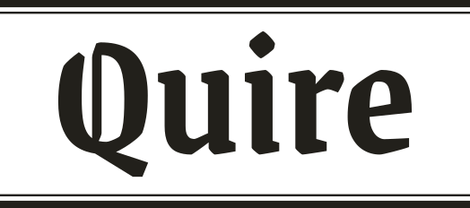
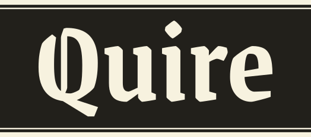
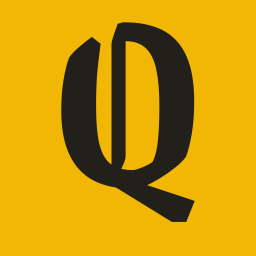
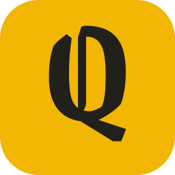
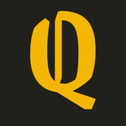

Quire binds the pieces you keep into an issue of your own newspaper. Each issue is set like a British Sunday paper: a front page, then each piece as its own section. Every rule in this guide serves one reader who should be able to read without strain, following the British Dyslexia Association Style Guide (2023).
This is the identity. The working mockup of the screens is in design-proposal.html; the written decisions are in README.md.
The ideaSection 1
A quire is a gathering of folded sheets. A Sunday paper is the same thing at a larger scale: a bundle of sections, each with its own name across the top. Quire works the same way. You keep pieces on your Desk, choose which belong together, and Quire binds them into an issue.
The tradition gives us the furniture: a blackletter nameplate, thick-over-thin rules, an ink dateline bar, ears beside the nameplate, a coloured band at the head of every section, an end mark after the last line, and a folio at the foot. It does not give us its reading habits. Newspapers set text in narrow justified columns, in serif type, with italics and capital-letter labels. For a dyslexic reader those habits get in the way, so Quire drops them.
The newspaper is the frame. The reading is plain. Everything that frames a page can look like Fleet Street. Everything you read sits in one ragged-right column of clear sans-serif type.
Colour, and the yellow questionSection 2
Yellow is the colour of a highlighter, and Quire is about keeping what you marked. Many dyslexic readers use yellow or cream overlays. And yellow avoids the reds, pinks and greens that the BDA guide warns against for colour-blind readers.
The choice is a warm marigold (#F2B705) rather than a lemon yellow: lemon vibrates against cream paper and looks cheap. Marigold sits well beside ink and newsprint, like a supplement's section band.
One hard rule: marigold is never text on paper. It reaches only 1.6:1 there. It is a fill: the section band, the ribbon, a ticked box, the highlight on the current tab, text selection. Ink on marigold reaches 8.95:1.
I considered two alternatives. Ink blue is calm and safe for colour-blind readers, but it reads as corporate, so it is used only for links. Salmon, the colour of the FT's paper, is the most newspaper-like, but it sits in the pink range the BDA advises against.
The BDA guide warns against red and green, so Quire has no red or green status colours at all. A problem is shown with a drawn icon and a plain sentence in bold ink: “Could not read a headline from the source.” Waiting shows a clock icon and the step in words: “Reading the page…”.
Night paper #1B1A16 with text #EDE6CF (13.95:1), muted #B2AA94 (7.52:1), links #A9C6F2 (9.99:1). Marigold stays the same. The ink dateline bar inverts to paper-on-night. Night follows the device setting until the reader picks a paper colour themselves.
TypographySection 3
Atkinson Hyperlegible Next (Braille Institute, 2025, SIL Open Font License) is set for every word you read: headlines, body, labels, buttons. It was drawn so that letters which are easy to confuse look clearly different. That serves the same goal as the BDA's sans-serif advice, and it avoids the problem the thesis's expert found with Arial, where a capital I and a small l look the same.
Il1| O0 bdpq rn m 6b 9g
Capital I, small l, one and a bar are four different shapes. Small b, d, p and q are not plain mirror images. “rn” does not turn into “m”.
Quire — Grenze Gotisch SemiBold (SIL Open Font License) is used only for the nameplate, and only as outlined artwork, never as live text. I chose it over the Fraktur faces because its capital Q stays a Q. In UnifrakturMaguntia it reads close to a D.
Five sizes is the whole scale. A reader learns it once. Headlines use sentence case and no negative tracking. Nothing is set in capitals except where a word is a capital (No., BBC). Bold is the only emphasis: Quire never sets italic, and turns the source's own italics into bold.
Fonts are self-hosted as .woff2 in the app, so reading an issue does not tell Google what you read.
Dyslexia rulesSection 4
Sources: British Dyslexia Association, “Dyslexia Style Guide” (2023); L. Ebbing, “Design of a newspaper for people with dyslexia” (ESAD, 2023), which tested a newspaper with twelve dyslexic readers. Where they speak to newspapers directly, that is noted.
| Guidance | Quire |
|---|---|
| Sans-serif type, 16–19 px (BDA) | Atkinson Hyperlegible Next. Body 19 px by default; the reader can choose 17, 22 or 25. Nothing on screen is under 16 px. |
| Letter spacing around 35% of letter width; word spacing at least 3.5× letter spacing (BDA) | The typeface is already widely spaced. Quire adds 0.02em tracking and 0.08em word spacing. Wide spacing in Reading settings sets 0.12em letters, 0.16em words, line height 2 and paragraph gaps of 2em (the WCAG 1.4.12 values). |
| Line spacing about 1.5 (BDA) | 1.6 for body, 1.5 for small text. |
| Left-aligned, never justified (BDA, and the thesis survey) | All text is left-aligned with a ragged right edge, and words are never hyphenated. Headlines are left-aligned too, with their lines balanced. |
| Avoid multiple columns, as in newspapers (BDA); readers found two narrow columns acceptable on paper (thesis) | Reading text is always one column, at most 64 characters wide. Columns appear only for separate items, such as the “In this issue” grid on the front page. Text never runs from one column into the next. |
| Avoid italics and underline (BDA) | No italics anywhere. Links keep an underline because colour alone would fail WCAG (blue against ink is only 2.0:1). It is a 1 px line set well below the text (0.28em offset) so it does not touch the letters. |
| No capitals for running text (BDA) | No capital-letter labels. The newspaper's tracked caps (section names, folios) become sentence case in bold. |
| Headings at least 20% larger, with space around them (BDA) | Subheads are 24 px against 19 px body (+26%), with 2em above and 0.6em below. |
| Off-white single-colour background, no patterns (BDA) | Newsprint #F7F2DF by default. No paper texture, no grain, no images behind text. |
| Readers have their own colour preference (BDA) | Reading settings: newsprint, cream, yellow, blue, grey, night. |
| Avoid red, green and pink (BDA) | None used. Status is an icon plus words. |
| Images help, but large images distract (thesis: 7 of 12 readers) | Source figures are shown whole, never cropped. Their height is capped (about 26rem on a page, 12rem on a Desk card), and they are never placed inside the text. |
| Keep the layout the same from page to page (thesis) | Every article page has the same order: band, headline, byline, figure, text, end mark, source note, page-turn bar. |
| Short sentences, plain words, no jargon (BDA) | Quire's own copy follows this (see Voice). The author's words are never rewritten. |
| Matt paper for print (BDA) | The print stylesheet keeps the same single column at 12 pt. The guide recommends matt paper. |
Justified columns. Text flowing across columns. Serif body type. Italic standfirsts. Drop caps, which split the first word. Capital-letter section labels. “Continued on page 6” jumps. Dense six-column front pages. Halftone screens over photographs.
Logo and marksSection 5
nameplate.svg
masthead.svg
masthead-night.svg
mark.svg
app-icon.svg
favicon.svg at 16, 32, 48 px, and the ink version mark-ink.svg.ribbon.svgNewspaper furnitureSection 6
Each piece has one job and is used the same way everywhere. Only one element per page is reversed (paper on ink), and that is how you know it matters most: the dateline bar on a front page, or the primary button on the Desk.
The two boxes beside the nameplate on a front page. They hold real facts only: the issue number and binding date on the left; the number of pieces and an estimated reading time on the right. On phones the ears fold into one line under the nameplate.
Sunday 18 October 2026A personal press for one reader
Marigold, full width, at the head of every article page. It names the page and the source, and links out to the original. It acts as the section's own nameplate, so it stays well apart from the headline (40 px).
Page 2 · From The Northfield Couriernorthfield-courier.example
The author's own sentence, upright, bold, 24 px, between a thick and a thin rule. Never italic, never in quotation-mark artwork.
The optional take. It is labelled “Quire's note”, so it is never confused with the author's words. It sits in a soft marigold box. If there is no take, the page reads fine without it.
A small marigold square after the last word says “this piece is finished”. The ribbon in the margin marks the paragraph where you stopped, and the page offers to take you back there.
Eleven volunteers share the work. Most are retired.
For now the drawers stay.
The foot of every reading page: Previous, “Page 2 of 5”, Next. On a large screen, Next also shows the coming headline. The bar stays on screen, its buttons are at least 48 px tall, and the arrow keys turn the page.
Reading settingsSection 7
Reading settings sit behind a button in the app bar of every reading page and in the Desk's navigation. They open as a panel under the bar, not a pop-up, so the page stays visible while you choose. The choice is saved on the device and applies everywhere, including the Desk.
Text size: Small 17, Standard 19, Large 22, Largest 25 px. Spacing: Standard, or Wide (WCAG 1.4.12 values). Headlines keep their sizes, so the page keeps its shape.
IconsSection 8
24-unit grid, 2-unit stroke, round ends and joins, drawn in ink. An icon never stands alone: it sits next to its word, which helps readers who find pictures easier to spot than text.
Voice and copySection 9
Quire keeps William's calm register and his product words (Keep, Desk, Select, Create issue, Press, More on this topic). It adds the BDA's writing rules: short sentences, active voice, everyday words, no double negatives, and no jargon such as “URL”.
| Now | Proposed | Why |
|---|---|---|
| Nothing kept yet. Paste a URL. It stays. | Nothing kept yet. Paste a link above to keep it. | “Link”, not “URL”. Says where to act. |
| (placeholder only) https:// | Label “Keep a link”, hint “Paste the address of an article. Quire saves it and reads it for you.” | A placeholder disappears when you type; a label stays. |
| Tick icon labelled “In” for screen readers | Visible checkbox label “In the issue” | Everyone sees what the box means. |
| Select something to bind. An issue is what you choose. | Tick at least one piece to create an issue. | One instruction, one sentence. |
| Take (unlabelled italic between hairlines) | Quire's note (labelled, upright) | Separates Quire's words from the author's. No italics. |
| 01 / 05 | Page 2 of 5 | Words read more easily than padded numbers. |
| That issue is not here. | This issue is not in your Press. It may have been removed. | Names the problem and the likely cause. |
| Return the pieces to Desk, or remove them too? | Remove this issue? Its pieces can go back to your Desk, or be removed too. Buttons: “Put pieces back on the Desk” · “Remove the pieces too” · “Keep the issue” | Clear choices and a clear way out. |
Motion and printSection 10
Motion. Turning a page is a short fade (about 220 ms, easing out), with no page-flip animation, since moving text is harder to track. The next page starts at the top. The ribbon note appears without moving. Opening “More on this topic” turns its arrow. With reduced motion set on the device, nothing animates.
Print. Print this issue uses the same order: front page, then one piece per page, each opening with its band and ending with its end mark. The single column stays, set in Atkinson Hyperlegible Next at 12 pt on A4 or letter, with a folio at the foot of every page. The settings, the page-turn bar and the app bar are not printed. Matt paper is recommended.